- 1. 本ドキュメントについて
- 2. Unityのインストールについて
- 3. 箱庭ドローンシミュレータのビジュアライズ方法
- 3.1. 箱庭ドローンシミュレータのUnity版利用
- 3.2. Unityの起動
- 4. トラブルシューティング
- 4.1. Meta SDKの環境設定
- 4.2. Meta SDKのVersion
| 略語 | 用語 | 意味 |
|---|---|---|
| No | 日付 | 版数 | 変更種別 | 変更内容 |
|---|---|---|---|---|
| 1 | 2026/01/04 | 0.1 | 新規 | 新規作成 |
1. 本ドキュメントについて
本ドキュメントは、箱庭ドローンシミュレータを利用する場合にビジュアライズのためにUnityを利用する場合のビルド方法となります。
- UnityのVersion
Unity Version 6.2が対象になります。その他のVersionでは操作方法などが違う可能性があります。
また、本ドキュメントは、Windows OS対象です。他のOSの操作は解説していません。
2. Unityのインストールについて
Unityのインストールについては、以下のドキュメントを参照してください。利用方法の注意点も良く読んで確認してください。
3. 箱庭ドローンシミュレータのビジュアライズ方法
箱庭ラボさんが公開している箱庭ドローンシミュレータ用のUnity用のビジュアライズリポジトリを利用します。
3.1. 箱庭ドローンシミュレータのUnity版利用
本ドキュメントは、箱庭ドローンシミュレータのUnity版のリポジトリを対象にしたものになります。作業用のディレクトリとして、hakoniwaディレクトリ作成した解説となります。
$ cd
$ mkdir hakoniwa
箱庭ドローンシミュレータのUnity版のリポジトリをクーロンします。
$ cd
$ cd hakoniwa
git clone --recursive https://github.com/hakoniwalab/hakoniwa-unity-drone.git
3.2. Unityの起動
ディスクトップ上にあるUnity HubのアイコンをクリックしてUnity Hubを起動します。Unity Hubのバージョンは、3.15.4(2026年01時点)となります。
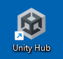
3.2.1. Unity Hubの操作
Unity Hubが起動すると以下のような画面になります。左のメニューからProjectsをクリックします。
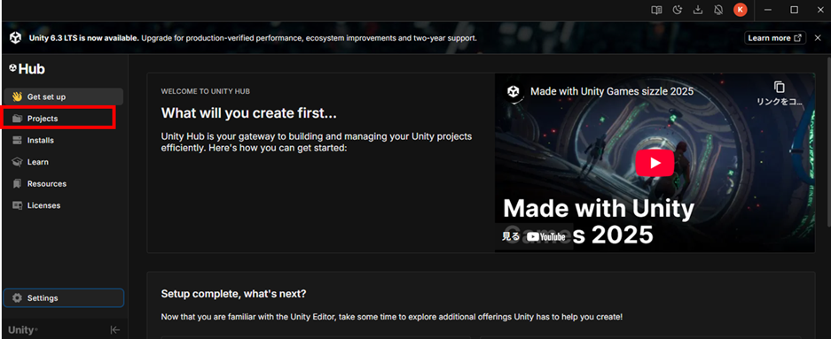
ProjectsをクリックするとUnity Hubにプロジェクトを登録する画面になります。
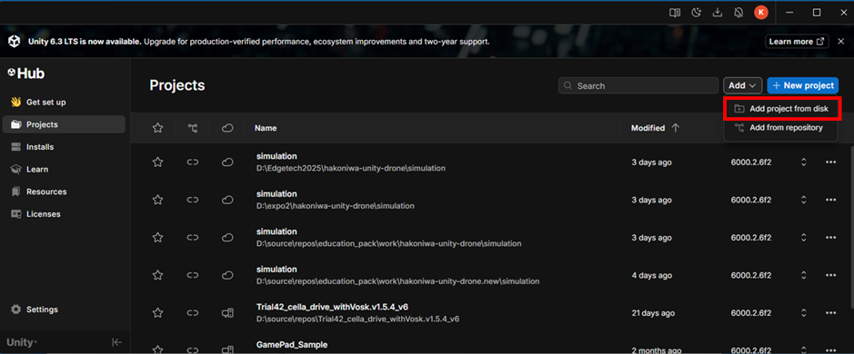
Addとなっている部分をクリックして、Add project from diskを選択します。
選択するとフォルダの選択画面が出てきます。先ほどクーロンしたhakoniwa-unity-drone\simulationのフォルダを選択します。
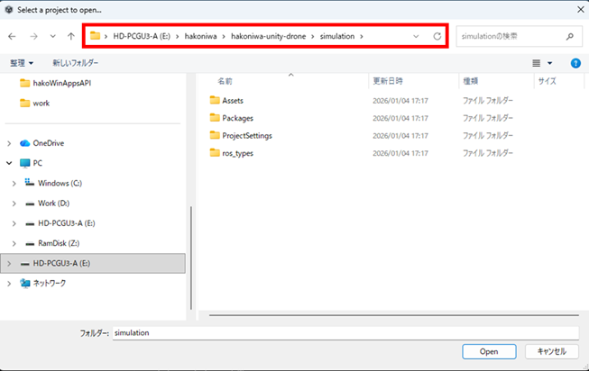
フォルダの選択をするとUnity HubにProjectが登録されます。
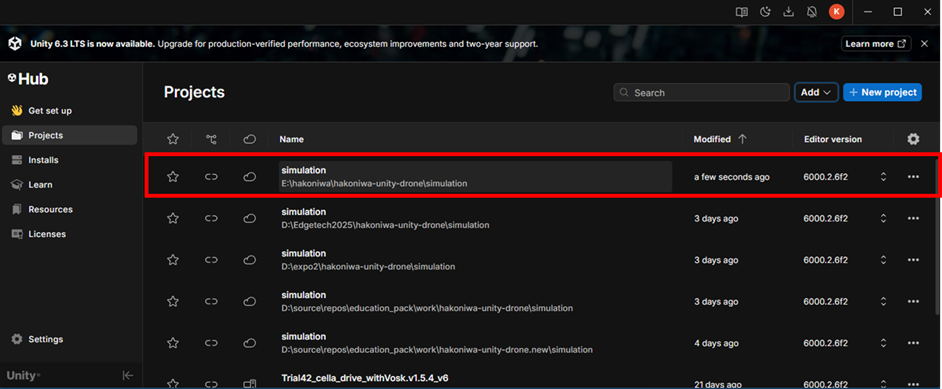
登録されたProjectをクリックして、Projectをロードします。
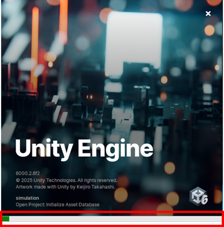
ロードが始まるとUnityがスクリプトなどのビルドをしながら立ち上がってくるので、Projectが立ち上がったくるまで待ちます。
3.2.2. Unityの操作
Unityが立ち上がると空のシーンが開きます。Fileメニューから、Open Sceneを選択してシーンを開きます。
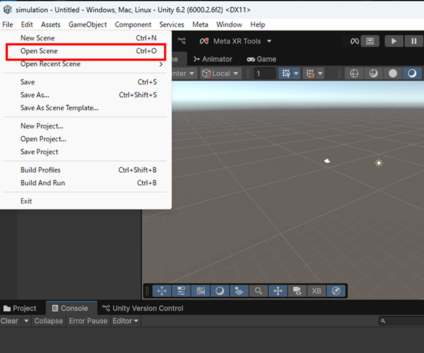
シーンは、hakoniwa-unity-drone\simulation\Sceneフォルダにあるので、Avatar.unityを選択します。
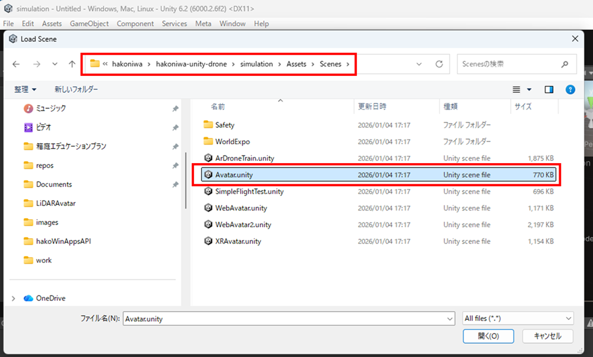
Avatarシーンが開らくと以下のような画面になります。
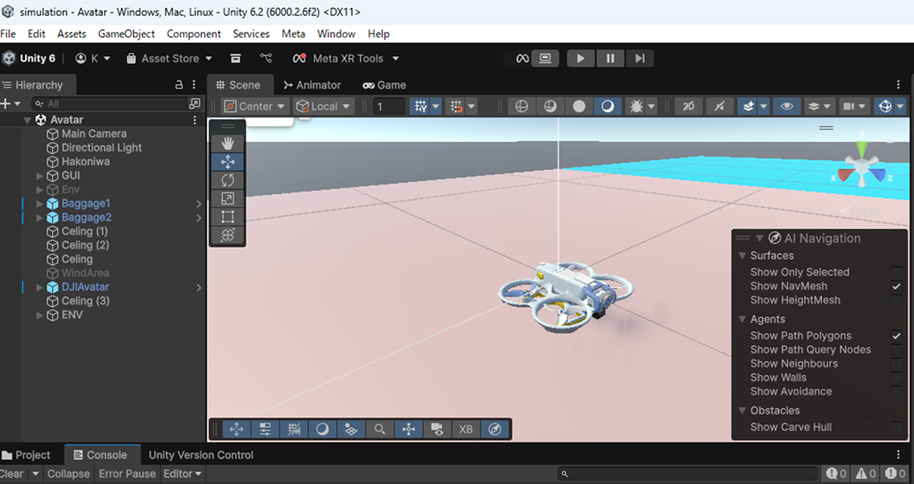
3.2.2.1. 画面設定
ゲームアプリとして利用する場合には、画面設定が必要です。以下のドキュメントにて対応してください。
3.2.2.2. ビルドの実行
UnityのFileメニューからBuild Profilesを選択します。
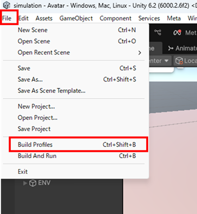
Build Profilesを選択すると、各Platformsの設定画面が左に表示されるので、ターゲットとなるPlatformsを選択します。Activeと表示されていないPlatformを選択した場合には、右下のSwitch PlatformをクリックしてActiveにする必要があります。
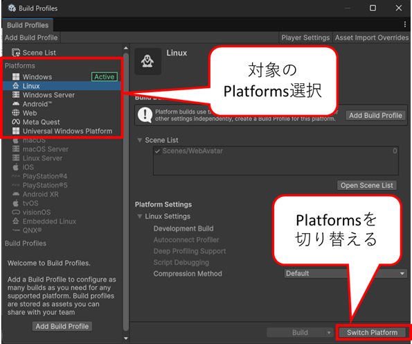
Switch Platformが完了したら、右上にあるPlayer Settingsをクリックします。
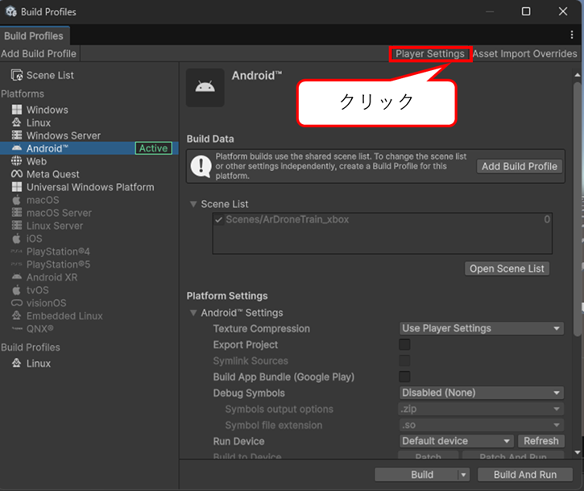
Player Settingsの画面が開くので、Company Name、Product Name、Versionの部分を変更します。変更したら閉じてください。
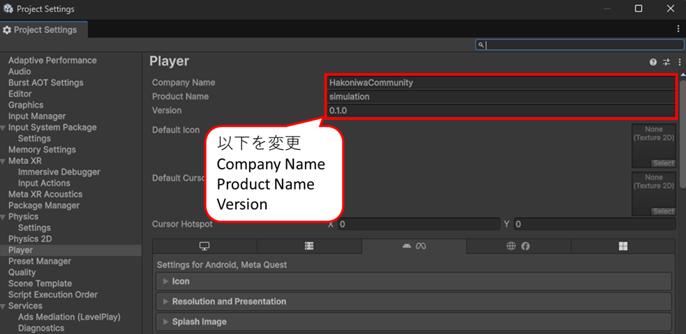
Activeにできたら、右下のBuildボタンの🔽の部分をクリックして、Clean Build…をクリックします。
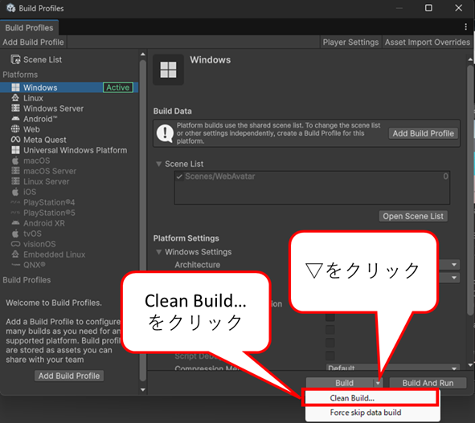
クリックするとビルド結果を出力するフォルダを選択するように指示されるので、右クリックにて適切なフォルダ名を作成してください。
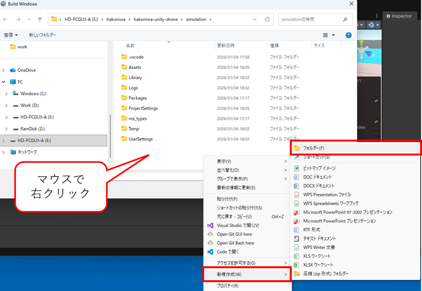
フォルダの選択ができるとビルドが始まります。ビルドが完了するまで待ってください。もし、Errorが出た場合などは、対応を行ってください。
4. トラブルシューティング
箱庭ドローンシミュレータのUnity版は、Meta Quest3/Quest3SでAndroidアプリを作成できるようになっています。Unityの画面に以下のようになっている場合には、Meta SDK側の設定を変更する必要があります。
4.1. Meta SDKの環境設定
Meta SDKは、Unity起動時にErrorとなっている場合があります。Unityメニューの下に♾️Meta XR Toolsの部分に🔴になっている場合には、環境設定を変更する必要あります。
♾️Meta XR Toolsをクリックして、対象になるPlatformの画面にて、Fix Allと表示されているようならFix Allをクリックして環境設定を反映するようにしてください。
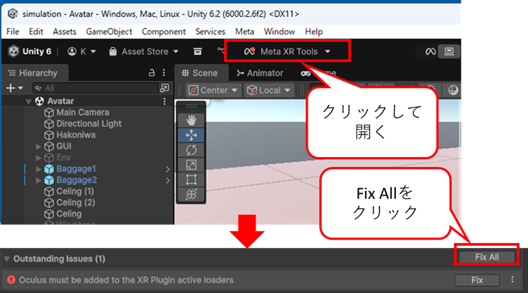
4.2. Meta SDKのVersion
Meta SDKは、現時点で83.0.1となっています。ただ、箱庭ドローンシミュレータのUnity版では、最新環境に対応していませんので、Meta SDKのVersionは、最新にしないでください。
また、Meta SDKは、Version 74以降では、Open XRを利用するように推奨されています。箱庭ドローンシミュレータのUnity版は、Open XR対応はしていないので、Open XRを導入するとビルドができなくなるので導入はしないでください。
4.2.1. Linux版のビルド時の注意
箱庭ドローンシミュレータのUnity版をLinux Platform用にビルドする場合には、Meta SDKのVersionをアップデートする必要があります。Meta SDK Version 71ではビルドができないです。
WindowsメニューからPackage Management→Package Managerを開きます。
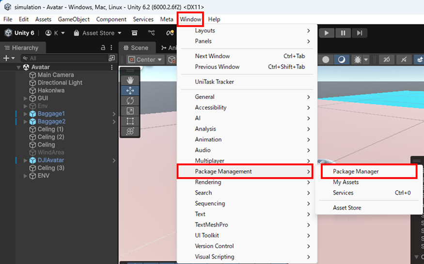
Package Managerが開いたら、Meta XR All-in-One SDKを探して選択します。選択できたら右側のVersion Historyをクリックします。
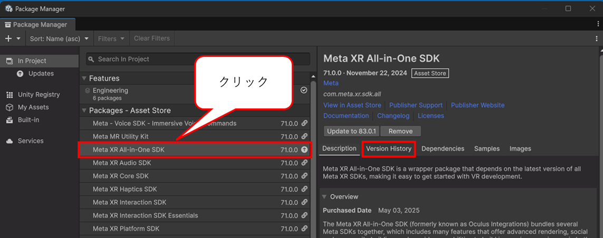
Version Historyをクリックすると現状のVersionと最新バージョンが表示されます。下の方にあるSee other versionのボタンをクリックします。
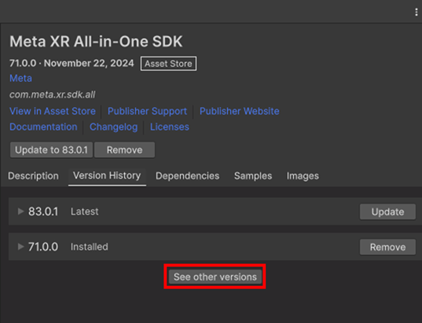
See other versionをクリックすると、利用できるVersionが表示されますので、81.0.0にUpdateしてください。
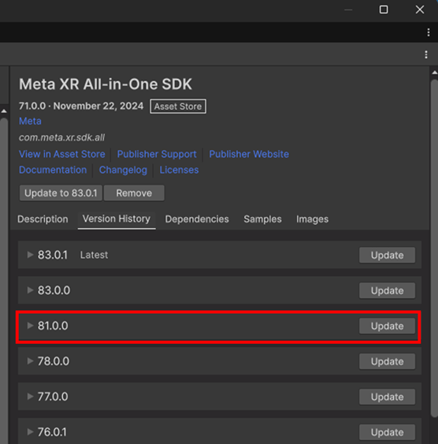
Version 81.0.0のUpdateをすることで、Windows用、Linux用のビルドはできるようになります。